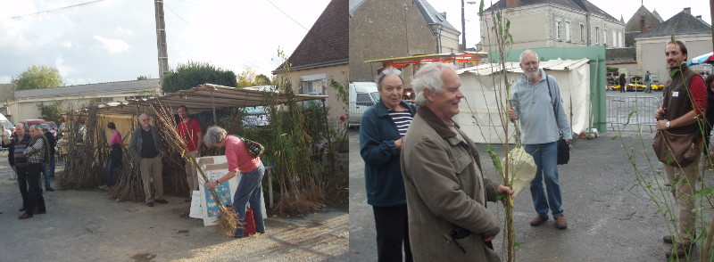

Pendant la saison de dormance des arbres, je me déplace dans le quart sud-est de la France lors de foires professionnelles et paysannes. En commandant à l'avance, vous pouvez récupérer vos arbres au moment des foires et ainsi réduire les frais de port.
Samedi 24 et dimanche 25 octobre à Neuvy Saint Sépulcre , Indre (36)
Dimanche 1er Novembre, Foire de la poire Sarteau à La Javie, à 12km de Digne, Alpes de Haute Provence(04)
Vendredi 6 Novmenbre, marché bio à la ferme de Chasagne à Villefagnan près de Ruffec, Charentes (16)
Samedi 21 Novembre,(9h-17h), Marché aux arbres à la coopérative Nectardéchois, Pailhares, Ardèche (07)
Dimanche 6 Décembre (9h-17h), à La Thomassine, Manosque , Alpes de haute Provence (04)
Samedi 30 et Dimanche 31 Janvier, (9h-18h) à Bormes les Mimosas, Var (83)
Dimanche 28 Février à Neuvy Saint Sépulcre , Indre (36)
